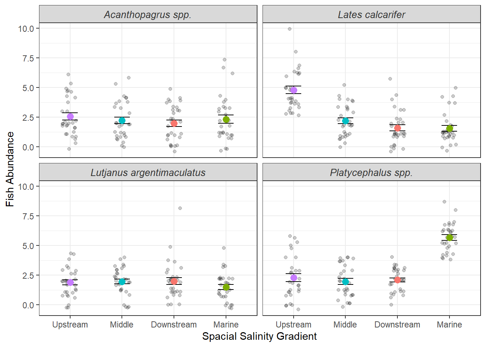

# Clearing the environment
rm(list = ls())
# Loading the packages needed
library(dplyr)
library(tidyverse)
library(readxl)
library(ggplot2)Keystone exercise: Estuary Fish Survey - Data Rescue Mission
Introduction
This project was inherited from a former PhD student who was studying the relationship between predatory fish assemblages and the water quality gradient along the Ross River (Townsville, QLD).
Unfortunately for us, their data management was completed manually and the files are a disaster. Our primary task is to clean the data, and produce a master data set, from which we can produce a publication-ready visualization of the estuary’s ecology.
Housekeeping and setup
The data
There were 4 datasets that were given to us. One is an excel file with the data spread over several sheets, with each needing to be loaded in separately.
# Loading in the data
catch1 <- read_excel("../data/estuary_catch_log.xlsx", sheet = 1)
catch2 <- read_excel("../data/estuary_catch_log.xlsx", sheet = 2)
catch3 <- read_excel("../data/estuary_catch_log.xlsx", sheet = 3)
catch4 <- read_excel("../data/estuary_catch_log.xlsx", sheet = 4)
catch_data <- bind_rows(catch1, catch2, catch3, catch4)
metadata <- read.csv("../data/estuary_metadata.csv")
raw_sonde_data <- read.csv("../data/estuary_sonde_data.csv")
species_dictionary <- read.csv("../data/species_dictionary.csv")
# Check that all files are loaded and what we expect
head(metadata) site_name lat lon zone
1 Upper_Ross -19.31 146.74 Upstream
2 mid_ross -19.28 146.78 Middle
3 LOWER ROSS -19.26 146.81 Downstream
4 ross_mouth -19.25 146.83 Marinehead(catch_data)# A tibble: 6 × 4
site date species count
<chr> <dttm> <chr> <dbl>
1 Lower_ross 2026-05-01 00:00:00 barramundi 6
2 Lower_ross 2026-05-01 00:00:00 MANGROVE JACK 3
3 Lower_ross 2026-05-01 00:00:00 bream 4
4 Lower_ross 2026-05-01 00:00:00 flathead 2
5 Lower_ross 2026-05-02 00:00:00 barramundi 1
6 Lower_ross 2026-05-02 00:00:00 MANGROVE JACK 1head(species_dictionary) common_name scientific_name
1 barramundi Lates calcarifer
2 mangrove_jack Lutjanus argentimaculatus
3 bream Acanthopagrus spp.
4 flathead Platycephalus spp.head(raw_sonde_data) site timestamp temperature salinity turbidity
1 upper_ross 01/05/2026 00:00 23.71379 4.054812 6.489046
2 mid_ross 01/05/2026 00:00 24.13302 15.742962 49.216967
3 lower_ross 01/05/2026 00:00 24.23558 28.934938 48.135752
4 ross_mouth 01/05/2026 00:00 24.64147 33.891350 49.811493
5 upper_ross 01/05/2026 00:15 26.06955 3.962750 25.184739
6 mid_ross 01/05/2026 00:15 24.62576 12.053501 34.816596The Deep Clean
Looking at the data, we can see several inconsistencies in the naming of variables and organisation of dates/times, looking deeper shows that there is also issues with the data itself where entries are missing or contain legacy errors. These need to be adjusted to ensure the datasets can be joined and accurately displayed.
Metadata
# Using glimpse() we can see the inconsistencies in site_name
glimpse(metadata) Rows: 4
Columns: 4
$ site_name <chr> "Upper_Ross", "mid_ross", "LOWER ROSS", "ross_mouth "
$ lat <dbl> -19.31, -19.28, -19.26, -19.25
$ lon <dbl> 146.74, 146.78, 146.81, 146.83
$ zone <chr> "Upstream", "Middle", "Downstream", "Marine"# Standardizing site names
clean_metadata <- metadata %>%
mutate(site_name = str_to_sentence(site_name),
site_name = str_trim(site_name),
site_name = str_replace_all(site_name, pattern = " ", replacement = "_")) %>%
rename(site = site_name) # Rename to merge with catch data
print(clean_metadata) site lat lon zone
1 Upper_ross -19.31 146.74 Upstream
2 Mid_ross -19.28 146.78 Middle
3 Lower_ross -19.26 146.81 Downstream
4 Ross_mouth -19.25 146.83 MarineThe Catch Data
# Using glimpse() we can see the inconsistencies in the species and that the
glimpse(catch_data)Rows: 427
Columns: 4
$ site <chr> "Lower_ross", "Lower_ross", "Lower_ross", "Lower_ross", "Lower…
$ date <dttm> 2026-05-01, 2026-05-01, 2026-05-01, 2026-05-01, 2026-05-02, 2…
$ species <chr> "barramundi", "MANGROVE JACK", "bream", "flathead", "barramund…
$ count <dbl> 6, 3, 4, 2, 1, 1, 3, 3, 2, 3, 1, 8, 4, 1, 1, 2, 1, 2, 4, 2, 2,…cleancatch_data <- catch_data %>%
mutate(site = str_to_sentence(site), # Standardizing site names
site = str_trim(site),
site = str_replace_all(site, pattern = " ", replacement = "_")) %>%
mutate(species = str_to_sentence(species), # Standardizing species
species = str_trim(species),
species = str_replace_all(species, pattern = " ", replacement = "_")) %>%
rename(common_name = species) %>% #to merge with species dictionary
mutate(date = ymd(date)) %>% # Standardizing dates
tidyr::complete(site, date, common_name, fill = list(count = 0)) #ensures that if no data was recorded, a 0 is in the place where the data should have been recorded
print(cleancatch_data)# A tibble: 480 × 4
site date common_name count
<chr> <date> <chr> <dbl>
1 Lower_ross 2026-05-01 Barramundi 6
2 Lower_ross 2026-05-01 Bream 4
3 Lower_ross 2026-05-01 Flathead 2
4 Lower_ross 2026-05-01 Mangrove_jack 3
5 Lower_ross 2026-05-02 Barramundi 1
6 Lower_ross 2026-05-02 Bream 3
7 Lower_ross 2026-05-02 Flathead 3
8 Lower_ross 2026-05-02 Mangrove_jack 1
9 Lower_ross 2026-05-03 Barramundi 0
10 Lower_ross 2026-05-03 Bream 0
# ℹ 470 more rowsSpecies Information
glimpse(species_dictionary)Rows: 4
Columns: 2
$ common_name <chr> "barramundi", "mangrove_jack", "bream", "flathead"
$ scientific_name <chr> "Lates calcarifer", "Lutjanus argentimaculatus", "Acan…# Standardizing species
species_dictionary <- species_dictionary %>%
mutate(common_name = str_to_sentence(common_name),
common_name = str_trim(common_name),
common_name = str_replace_all(common_name, pattern = " ", replacement = "_"))
print(species_dictionary) common_name scientific_name
1 Barramundi Lates calcarifer
2 Mangrove_jack Lutjanus argentimaculatus
3 Bream Acanthopagrus spp.
4 Flathead Platycephalus spp.The Environmental Data
glimpse(raw_sonde_data)Rows: 11,520
Columns: 5
$ site <chr> "upper_ross", "mid_ross", "lower_ross", "ross_mouth", "upp…
$ timestamp <chr> "01/05/2026 00:00", "01/05/2026 00:00", "01/05/2026 00:00"…
$ temperature <dbl> 23.71379, 24.13302, 24.23558, 24.64147, 26.06955, 24.62576…
$ salinity <dbl> 4.054812, 15.742962, 28.934938, 33.891350, 3.962750, 12.05…
$ turbidity <dbl> 6.489046, 49.216967, 48.135752, 49.811493, 25.184739, 34.8…sensor_data <- raw_sonde_data %>%
mutate(site = str_to_sentence(site), # Standardizing site names
site = str_trim(site),
site = str_replace_all(site, pattern = " ", replacement = "_")) %>%
mutate(timestamp = dmy_hm(timestamp)) %>% # Standardizing dates
mutate(turbidity = na_if(turbidity, -999)) %>% # Clearing out bad data
mutate(salinity = ifelse(salinity < 0, NA, salinity))
daily_sensordata <- sensor_data %>%
group_by(site, date = as_date(timestamp)) %>%
summarise(daymean_temp = mean(temperature, na.rm = TRUE),
daymean_salinity = mean(salinity, na.rm = TRUE),
daymean_turbidity = mean(turbidity, na.rm = TRUE),
.groups = "drop")
head(daily_sensordata)# A tibble: 6 × 5
site date daymean_temp daymean_salinity daymean_turbidity
<chr> <date> <dbl> <dbl> <dbl>
1 Lower_ross 2026-05-01 23.8 28.4 27.9
2 Lower_ross 2026-05-02 24.0 27.7 24.1
3 Lower_ross 2026-05-03 24.2 28.1 20.6
4 Lower_ross 2026-05-04 24.0 28.2 28.4
5 Lower_ross 2026-05-05 23.9 27.6 26.7
6 Lower_ross 2026-05-06 24.0 28.2 24.0Joining the Clean Datasets
# Joining the Fish data
merge_catchspecies <- cleancatch_data %>%
left_join(species_dictionary, by = join_by(common_name))
print(merge_catchspecies)# A tibble: 480 × 5
site date common_name count scientific_name
<chr> <date> <chr> <dbl> <chr>
1 Lower_ross 2026-05-01 Barramundi 6 Lates calcarifer
2 Lower_ross 2026-05-01 Bream 4 Acanthopagrus spp.
3 Lower_ross 2026-05-01 Flathead 2 Platycephalus spp.
4 Lower_ross 2026-05-01 Mangrove_jack 3 Lutjanus argentimaculatus
5 Lower_ross 2026-05-02 Barramundi 1 Lates calcarifer
6 Lower_ross 2026-05-02 Bream 3 Acanthopagrus spp.
7 Lower_ross 2026-05-02 Flathead 3 Platycephalus spp.
8 Lower_ross 2026-05-02 Mangrove_jack 1 Lutjanus argentimaculatus
9 Lower_ross 2026-05-03 Barramundi 0 Lates calcarifer
10 Lower_ross 2026-05-03 Bream 0 Acanthopagrus spp.
# ℹ 470 more rows# Joining environmental data
merge_metasensor <- daily_sensordata %>%
left_join(clean_metadata, by = join_by(site))
print(merge_metasensor)# A tibble: 120 × 8
site date daymean_temp daymean_salinity daymean_turbidity lat lon
<chr> <date> <dbl> <dbl> <dbl> <dbl> <dbl>
1 Lower… 2026-05-01 23.8 28.4 27.9 -19.3 147.
2 Lower… 2026-05-02 24.0 27.7 24.1 -19.3 147.
3 Lower… 2026-05-03 24.2 28.1 20.6 -19.3 147.
4 Lower… 2026-05-04 24.0 28.2 28.4 -19.3 147.
5 Lower… 2026-05-05 23.9 27.6 26.7 -19.3 147.
6 Lower… 2026-05-06 24.0 28.2 24.0 -19.3 147.
7 Lower… 2026-05-07 24.0 27.6 25.1 -19.3 147.
8 Lower… 2026-05-08 24.0 28.0 25.9 -19.3 147.
9 Lower… 2026-05-09 24.0 27.8 24.6 -19.3 147.
10 Lower… 2026-05-10 23.9 28.1 26.2 -19.3 147.
# ℹ 110 more rows
# ℹ 1 more variable: zone <chr># Creating one large dataset
merged_data <- merge_metasensor %>%
left_join(merge_catchspecies, by = join_by(date, site))
view(merged_data)Statistical Summary
A statistical summary table displaying the mean and standard deviation of fish counts and salinity for each species per zone.
summary_table <- merged_data %>%
group_by(scientific_name, zone) %>%
summarise(n = n(),
mean_count = mean(count, na.rm = TRUE),
sd_count = sd(count, na.rm = TRUE),
se_count = sd(count, na.rm = TRUE) / sqrt((n)),
mean_salinity = mean(daymean_salinity, na.rm = TRUE),
sd_salinity = sd(daymean_salinity, na.rm = TRUE),
se_salinity = sd(daymean_salinity, na.rm = TRUE)/ sqrt ((n)),
.groups = "drop")
print(summary_table)# A tibble: 16 × 9
scientific_name zone n mean_count sd_count se_count mean_salinity
<chr> <chr> <int> <dbl> <dbl> <dbl> <dbl>
1 Acanthopagrus spp. Down… 30 2 1.51 0.275 28.0
2 Acanthopagrus spp. Mari… 30 2.33 1.88 0.344 34.0
3 Acanthopagrus spp. Midd… 30 2.23 1.57 0.286 14.9
4 Acanthopagrus spp. Upst… 30 2.57 1.65 0.302 4.99
5 Lates calcarifer Down… 30 1.6 1.40 0.256 28.0
6 Lates calcarifer Mari… 30 1.57 1.36 0.248 34.0
7 Lates calcarifer Midd… 30 2.2 1.32 0.242 14.9
8 Lates calcarifer Upst… 30 4.8 1.69 0.309 4.99
9 Lutjanus argentimacul… Down… 30 2 1.64 0.299 28.0
10 Lutjanus argentimacul… Mari… 30 1.5 1.14 0.208 34.0
11 Lutjanus argentimacul… Midd… 30 1.97 1.13 0.206 14.9
12 Lutjanus argentimacul… Upst… 30 1.9 1.16 0.211 4.99
13 Platycephalus spp. Down… 30 2.1 0.960 0.175 28.0
14 Platycephalus spp. Mari… 30 5.67 1.30 0.237 34.0
15 Platycephalus spp. Midd… 30 1.97 1.45 0.265 14.9
16 Platycephalus spp. Upst… 30 2.3 1.82 0.333 4.99
# ℹ 2 more variables: sd_salinity <dbl>, se_salinity <dbl>Plotting the Data
- A multi-panel plot (faceted by species) showing fish abundance along the salinity gradient, formatted to professional publication standards.
summary_table %>%
ggplot() +
geom_ribbon(aes(x = mean_salinity, ymin = mean_count - se_count, ymax = mean_count + se_count), fill = "lightgrey") +
geom_line(aes(x = mean_salinity, y = mean_count)) +
facet_wrap(~scientific_name, scales = "fixed") +
theme_bw() +
theme(strip.text = element_text(face = "italic", size = 10, colour = "grey20")) +
labs(y = "Daily Mean Abundance (+- SE)",
x = "Salinity Gradient")
# because apparently i need to spatially organise the data
summary_table %>%
ggplot() +
geom_point(data = merged_data, aes(x = reorder(zone, daymean_salinity), y = count), position = position_jitter(0.15), alpha= 0.2, inherit.aes = FALSE) +
geom_errorbar(aes(x = zone, ymin = mean_count - se_count, ymax = mean_count + se_count), width = 0.3) +
geom_point(aes(x = reorder(zone, mean_salinity), y = mean_count, colour = zone), size = 3) +
facet_wrap(~scientific_name, scales = "fixed") +
theme_bw() +
theme(legend.position = "none") +
theme(strip.text = element_text(face = "italic", size = 10, colour = "grey20")) +
labs(y = "Fish Abundance",
x = "Spacial Salinity Gradient")
#(data = merged_data, aes(x = reorder(zone, daymean_salinity), y = count), inherit.aes = FALSE) +
#geom_boxplot(data = merged_data, aes(x = reorder(zone, daymean_salinity), y = count), inherit.aes = FALSE)